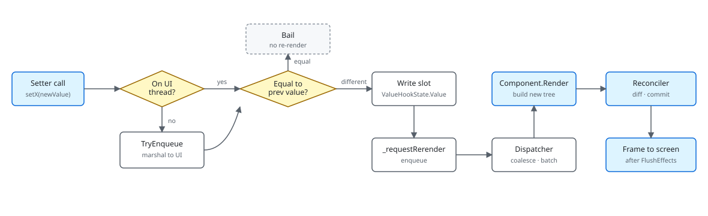

Reactivity in Microsoft.UI.Reactor (Reactor) is one direction and one verb: a setter writes a
slot, the framework asks the owning component to describe the next
tree, the reconciler diffs and commits. There is no observer graph
between properties, no dependency tracker watching reads, no binding
expression listening for PropertyChanged. The setter — the second
element of every UseState tuple — is the only thing the runtime
treats as a signal. Hold the value in a hook slot, change it through
the setter, and the component re-renders with the new value visible.
Hold the value in a plain field, mutate it directly, and nothing
happens — the render loop never finds out. This is the same trade-off
React made: the model is small and predictable, but every reactive
edge is something you typed.
Reactivity Model¶
This page is the why behind the Hooks surface. If you've
come from XAML and INotifyPropertyChanged, the change of model is
larger than the syntax. If you've come from SwiftUI's @Observable or
Vue's reactivity, the change is smaller, but Reactor is more explicit
than either.
What flows through the render loop¶

| Step | Code | Notes |
|---|---|---|
| Setter call | closure returned from UseState |
Cached on the hook slot; closes over the slot cell |
| UI-thread check | MarshalIfOffUIThread |
Auto-marshal via DispatcherQueue from background |
| Equality | EqualityComparer<T>.Default.Equals |
No write, no rerender if equal |
| Slot write | ValueHookState<T>.Value = newValue |
Stays inside RenderContext |
| Rerender request | _requestRerender?.Invoke() |
Host queues a render |
| Coalesce | DispatcherQueue.TryEnqueue |
Many setters → one render |
| Render | Component.Render() |
Hooks read the new slot value |
| Diff | Reconciler.Reconcile |
Property writes to existing WinUI controls |
| Flush | FlushEffects |
Cleanups, then effect bodies |
Every section below explains why one step in that table is shaped the way it is.
The setter is the signal¶
public (T Value, Action<T> Set) UseState<T>(T initialValue, bool threadSafe = false)
{
if (_hookIndex >= _hooks.Count)
{
_hooks.Add(new ValueHookState<T>(initialValue, threadSafe));
}
var currentIndex = _hookIndex;
_hookIndex++;
if (_hooks[currentIndex] is not ValueHookState<T> hook)
throw new HookOrderException(
$"Hook at index {currentIndex} is {_hooks[currentIndex].GetType().Name}, expected ValueHookState<{typeof(T).Name}> (UseState). " +
"Hooks must be called in the same order every render.");
UseState returns (value, setter). The value is just a read of
the slot at the current hook index. The setter is a cached delegate
over that slot cell. Calling the setter does not, by itself, "react".
It compares the new value against the old via
EqualityComparer<T>.Default, writes if different, and calls back
into the host with _requestRerender. The host decides when to render
next — typically on the next dispatcher tick — and once it does, the
component's Render() runs and the slot read returns the new value.
private Action<T> MakeStateSetter<T>(ValueHookState<T> h)
{
void Setter(T newValue)
{
bool changed;
if (h.ThreadSafe)
{
lock (h.Lock!)
{
changed = !EqualityComparer<T>.Default.Equals(h.Value, newValue);
if (changed) h.Value = newValue;
}
if (Diagnostics.ReactorEventSource.Log.IsEnabled(
global::System.Diagnostics.Tracing.EventLevel.Verbose,
Diagnostics.ReactorEventSource.Keywords.State))
Diagnostics.ReactorEventSource.Log.StateChange("UseState", typeof(T).Name, changed);
if (changed) _requestRerender?.Invoke();
}
else
{
if (MarshalIfOffUIThread("UseState", () => Setter(newValue))) return;
changed = !EqualityComparer<T>.Default.Equals(h.Value, newValue);
if (changed) h.Value = newValue;
if (Diagnostics.ReactorEventSource.Log.IsEnabled(
global::System.Diagnostics.Tracing.EventLevel.Verbose,
Diagnostics.ReactorEventSource.Keywords.State))
Diagnostics.ReactorEventSource.Log.StateChange("UseState", typeof(T).Name, changed);
if (changed) _requestRerender?.Invoke();
}
}
return Setter;
}
A few details matter for understanding the model:
- No subscribers. Nothing listens to the slot. The setter knows one piece of mutable state (the slot) and one piece of mutable behaviour (the host's render request). Components don't see other components' state changes; they re-render when their own slots change, when their parent re-renders, or when a context value they consume changes — and not otherwise.
- Equality short-circuits. If you set
countto its current value, no rerender. This is why hook-driven re-renders compose cleanly: passing the same slot value through three parent renders does not multiply work in the leaf. - Setters are stable. The delegate is built once, on the render that
created the slot, and cached on the slot itself; every later render
hands back the same instance. Passing
setCountas aUseEffectdependency or through a child prop does not retrigger work.
Caveat: Mutating a reference-typed slot value in place does not trigger a rerender even if you call the setter. The equality check compares
newValueagainsthook.Value, and after an in-place mutation they're the same reference — so the equality check returns true and the framework bails. If you need to "change" aList<T>or a custom class, allocate a new instance (new List<T>(old) { newItem }) and hand that to the setter, or useUseReducerand return a new value from the reducer.
Why not INotifyPropertyChanged?¶
XAML reactivity hangs off INotifyPropertyChanged. A view model
implements INotifyPropertyChanged, properties raise PropertyChanged
on assignment, BindingExpression instances
listen and pull the new value. The model is "the property is the
signal" — every property declared on a VM is a potential reactive
edge, with a runtime cost (the event), an ergonomic cost (you write
the raise yourself or rely on a source generator), and a correctness
cost (anything mutating the property without raising is a silent bug).
Reactor moves the signal off the property and onto the setter. The
value lives in a hook slot, the only path to a
write is the setter the framework hands you, and the only path to a
read is calling the hook again in the next render. This eliminates
the silent-mutation class of bug: there is no way to update a
UseState value without going through the setter, and the setter is
the thing the framework hooks. It also eliminates the per-property
event subscription cost — there are no subscriptions at all.
The cost is that every piece of state you want to make reactive has to go through a hook. A plain field can hold any value, but if you change it inside a render handler the UI won't update. The Rules of Reactor document encodes this: every mutable thing the UI depends on lives in a hook, every mutation goes through that hook's setter.
public sealed class Observable<T> : INotifyPropertyChanged
{
private T _value;
public Observable() : this(default!) { }
public Observable(T initial) => _value = initial;
public T Value
{
get => _value;
set
{
if (EqualityComparer<T>.Default.Equals(_value, value)) return;
_value = value;
PropertyChanged?.Invoke(this, _valueChangedArgs);
}
}
public event PropertyChangedEventHandler? PropertyChanged;
There is a bridge. Observable<T> is a minimal INPC cell — one
property, raises PropertyChanged when value differs — and
RenderContext.UseObservable subscribes the current component to it.
Use this when you have a piece of state shared across components (dev
flags, the currently-signed-in user, light/dark mode) or when you're
interoperating with existing INPC view models. It's deliberately a
small surface; full INPC view models with multiple properties and
computed expressions stay in their own world, and a wrapper component
typically funnels their data into local hooks for the rendered slice.
Why not auto-tracking?¶
SwiftUI's @Observable, Vue's ref/reactive, MobX's observable,
and Solid's signals all hide the dependency edge inside the read:
accessing a tracked property during render registers the component as
a dependent of that property, and a write later notifies whoever
registered. The model is "the framework figures out who needs to
rerender". The ergonomics are excellent when it works. The trade-offs
are that the dependency graph is invisible (the dev tools become a
mandatory part of debugging), the read-side becomes load-bearing
(passing a tracked value to a memoizing helper can detach the
dependency), and the proxy machinery on the reactive object has a
runtime cost that's hard to predict.
Reactor's positional hook table chooses the opposite trade-off. The
dependency edge is the code you wrote: UseState is a slot, the
setter is the signal, re-render is the effect. The graph is the call
stack. Debugging is reading source. This is the same reason React
picked hooks over observable after the class-component era: when the
reactive surface is small enough, an explicit setter beats invisible
tracking.
ShouldUpdate — opting out of parent-driven re-renders¶
public abstract class Component
{
// Settable so the reconciler can transfer a live RenderContext (hooks +
// cleanups) onto a freshly-constructed instance when a Hot Reload edit
// mints a new component Type token (spec 049 §7 subtree migration). Outside
// that path the value is the per-instance context created here.
internal RenderContext Context { get; set; } = new();
/// <summary>
/// Override to describe the UI. Use UseState, UseEffect, etc. from the context.
/// Must call hooks in the same order every render.
/// </summary>
public abstract Element Render();
/// <summary>
/// Controls whether this propless component should re-render when its parent re-renders.
/// Default: false — propless components only re-render from their own state changes or context changes.
/// Override and return true to always re-render when the parent re-renders.
/// </summary>
protected internal virtual bool ShouldUpdate() => false;
A parent re-render normally cascades to its children: the parent's
Render() produces a new element tree, the reconciler walks it, and
each child component's Render() is invoked because the parent's call
to Component(...) is what allocated the child element. The default
ShouldUpdate() on the propless Component base returns false —
those have no inputs that could have changed, so a parent re-render with
the same shape doesn't propagate. Component<TProps> overrides the
props-aware sibling, ShouldUpdate(TProps? old, TProps? next), with
!Equals(old, next): record props get structural comparison for free,
so a parent that re-renders with equal props does not re-render the
child. Class-typed props fall back to Object.Equals, which tries
reference equality first: pass the same instance and the child is
still skipped, but a freshly allocated instance — the usual case when
props are built inline each render — compares unequal and propagates.
Give a class-typed props type its own Equals override if you want
structural comparison rather than identity.
Override ShouldUpdate() to opt a propless component back in (rare —
the typical reason is a context value the component implicitly reads
that you want it to pick up), or override the two-argument form to
replace the default props comparison. Don't reach for either to
memoize: use
UseMemo on the expensive computation, or hoist state
upward so the parent doesn't need to re-render for an unrelated
change.
State batching¶
private Action<T> MakeStateSetter<T>(ValueHookState<T> h)
{
void Setter(T newValue)
{
bool changed;
if (h.ThreadSafe)
{
lock (h.Lock!)
{
changed = !EqualityComparer<T>.Default.Equals(h.Value, newValue);
if (changed) h.Value = newValue;
}
if (Diagnostics.ReactorEventSource.Log.IsEnabled(
global::System.Diagnostics.Tracing.EventLevel.Verbose,
Diagnostics.ReactorEventSource.Keywords.State))
Diagnostics.ReactorEventSource.Log.StateChange("UseState", typeof(T).Name, changed);
if (changed) _requestRerender?.Invoke();
}
else
{
if (MarshalIfOffUIThread("UseState", () => Setter(newValue))) return;
changed = !EqualityComparer<T>.Default.Equals(h.Value, newValue);
if (changed) h.Value = newValue;
if (Diagnostics.ReactorEventSource.Log.IsEnabled(
global::System.Diagnostics.Tracing.EventLevel.Verbose,
Diagnostics.ReactorEventSource.Keywords.State))
Diagnostics.ReactorEventSource.Log.StateChange("UseState", typeof(T).Name, changed);
if (changed) _requestRerender?.Invoke();
}
}
return Setter;
}
Three setters in the same synchronous block call _requestRerender
three times, and the host's request handler enqueues a render via
DispatcherQueue.TryEnqueue. The dispatcher coalesces repeated
enqueues on the same tick — only one render runs. This is the
batching contract: any sequence of setter calls in one event handler,
one effect body, one timer callback, etc., collapses into a single
render. The component sees all three new values at once on the next
frame.
Batching breaks if you await between setters and the continuation
hops to a different dispatcher tick. The first render fires before
the second setter runs; the second setter triggers another render
afterward. If you need them atomic, set them before the await or
use a single UseReducer state that captures all the
fields you're updating.
Patterns¶
Bridging an existing INPC view model¶
public sealed class Observable<T> : INotifyPropertyChanged
{
private T _value;
public Observable() : this(default!) { }
public Observable(T initial) => _value = initial;
public T Value
{
get => _value;
set
{
if (EqualityComparer<T>.Default.Equals(_value, value)) return;
_value = value;
PropertyChanged?.Invoke(this, _valueChangedArgs);
}
}
public event PropertyChangedEventHandler? PropertyChanged;
When you have an INotifyPropertyChanged view model you need to render
— a port from an existing XAML app, a model exposed by a service —
expose the values you actually display via UseObservable for Observable<T>
cells, or build a custom hook that subscribes to PropertyChanged
inside an effect and stashes the latest value in UseState. Either
way, the component's own state lives in hooks; the INPC cell is a
source the hook listens to.
Atomic multi-field updates¶
When two state values must change together, pick one of:
- One
UseReducerholding both fields in a record. A singleupdate(prev => prev with { Foo = ..., Bar = ... })writes both. - A computed slot. Hoist the second value into a
UseMemoderived from the first.
Don't write setFoo(...); setBar(...) after an await and hope —
the awaited continuation may have already let one render run.
Common Mistakes¶
Mutating a UseState value in place¶
// Don't:
var (items, setItems) = UseState(new List<string>());
items.Add("new"); // mutates the same list the slot holds
setItems(items); // equality check sees same reference → no rerender
public (T Value, Action<T> Set) UseState<T>(T initialValue, bool threadSafe = false)
{
if (_hookIndex >= _hooks.Count)
{
_hooks.Add(new ValueHookState<T>(initialValue, threadSafe));
}
var currentIndex = _hookIndex;
_hookIndex++;
if (_hooks[currentIndex] is not ValueHookState<T> hook)
throw new HookOrderException(
$"Hook at index {currentIndex} is {_hooks[currentIndex].GetType().Name}, expected ValueHookState<{typeof(T).Name}> (UseState). " +
"Hooks must be called in the same order every render.");
The setter's equality compares newValue against hook.Value. After
items.Add, both refer to the same list, the comparison returns true,
and nothing is written or re-rendered. Allocate a new list — or use
UseReducer so the framework forces you to return a new
value from the reducer:
var (items, update) = UseReducer(new List<string>());
// The updater must return a NEW list — mutating and returning the same
// instance compares equal, so nothing is written and nothing re-renders.
Action addItem = () => update(prev => [.. prev, "new"]);
Tips¶
The setter is the contract. Anything that needs to be reactive goes through a setter. Fields, properties, statics, and direct mutations are invisible to the render loop — they may exist in C#, but the UI won't reflect them until something else triggers a render.
Equality is EqualityComparer<T>.Default. Records are value-equal
by default, primitives are value-equal, classes default to reference
equality. If you store a custom class in UseState, either implement
IEquatable<T> or replace the instance on every change so the
equality check can decide correctly.
Don't reach for UseObservable for component-local state. It
exists to bridge cross-component or external state. Local state lives
in UseState / UseReducer so the slot table tracks it.
Next Steps¶
- Architecture Overview — Previous: the full render loop.
- Hooks Internals — Next: how the slot table is laid out.
- Reactor vs XAML — Same model contrasted with XAML's binding / INPC.
- Reconciliation — What the diff phase does once
Render()returns. - Effects Scheduling — When effects fire relative to the setter / render cycle.